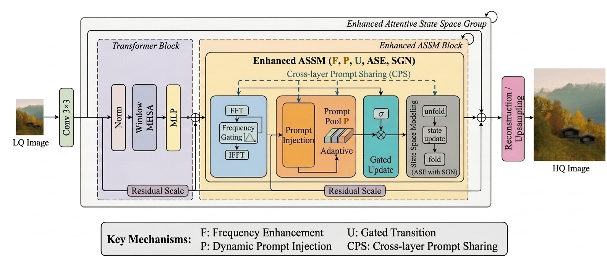
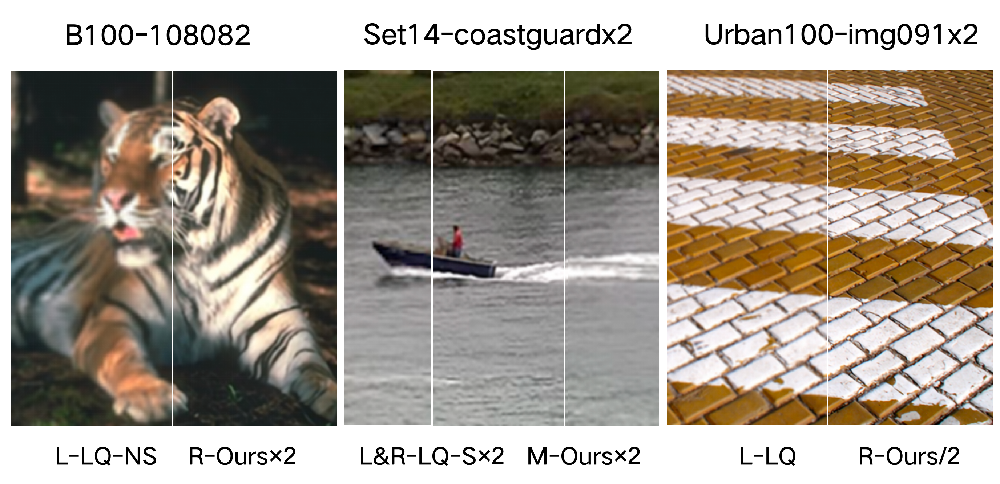

Mamba Encoder
用于高效提取长序列特征并保持稳定的状态更新。
论文解说页
这是一个面向审稿人和读者的论文展示页，包含方法亮点、模型结构、项目文件夹与实验图示说明。

HIFER-Mamba enhances the original MambaIR framework through frequency-aware feature enhancement, progressive feature integration, and nonlinear state enhancement.
实验数据与预处理资源
核心编码器、融合模块和预测头
论文中的结构图与实验结果图
用于高效提取长序列特征并保持稳定的状态更新。
将多尺度特征进行对齐融合，提升表示能力。
输出最终任务结果并支持实验验证。
Explicitly enhances high-frequency representations for sharper textures and clearer edges.
Improves cross-layer information propagation and feature consistency during reconstruction.
Introduces nonlinear state evolution to increase the representation capability of Mamba.

HIFER-Mamba reconstructs clearer structures and finer textures than previous Mamba-based methods.
展示了输入特征经过 Mamba 编码、特征融合与输出预测的整体流程。
说明了数据准备、模型训练、推理和结果分析的完整链路。
用于直观对比不同配置下的性能提升与稳定性。